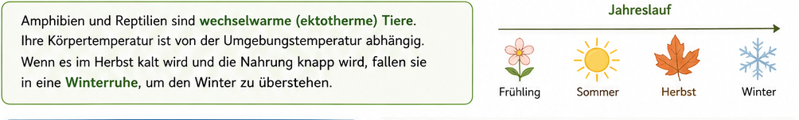
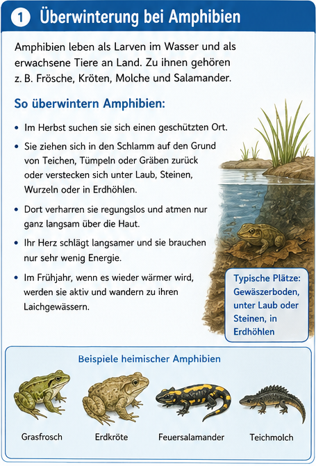
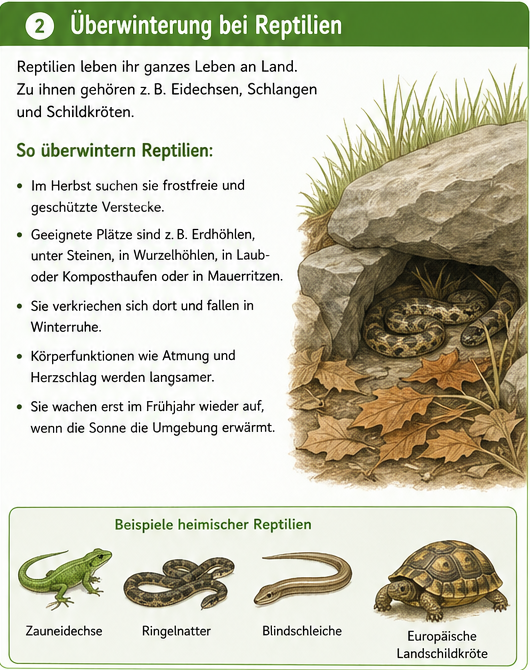
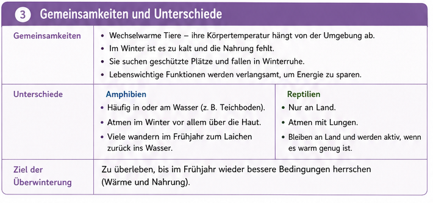
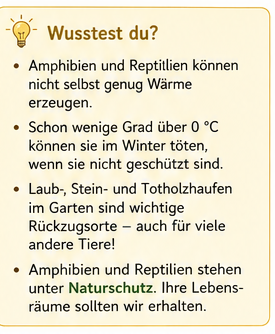
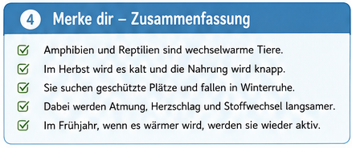
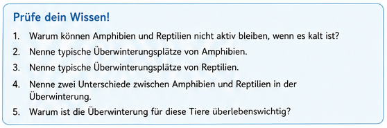

Zurueck zum Fach-Dashboard
Biologie Klasse 5
Modul 5: Ueberwinterung von Amphibien und Reptilien
Du erklaerst, warum Amphibien und Reptilien im Winter in Winterruhe fallen,
vergleichst ihre Strategien und ordnest typische Ueberwinterungsplaetze sicher zu.
Lernen
Trainieren
Testmodul
Grundlagen und Jahreslauf
Der erste Block zeigt die zentrale Idee: wechselwarm, Temperaturabhaengigkeit und Winterruhe.

Lehrplanbezug:
Kerncurriculum Naturwissenschaften Niedersachsen (Sek I)
|
KMK-Bildungsstandards Biologie 2024
|
Didaktisches Konzept
1) Ueberwinterungsplaetze zuordnen
Ordne die Tiere typischen Ueberwinterungsplaetzen zu.


Neu laden
Pruefen
Noch nicht geprueft.
2) Gemeinsamkeiten und Unterschiede
Ordne jede Aussage: Gemeinsamkeit, Amphibien-spezifisch oder Reptilien-spezifisch.

Neu laden
Pruefen
Noch nicht geprueft.
3) Wusstest-du-Check
Pruefe kurze Aussagen zu Kaelte, Schutz und Naturschutz.

Neu laden
Pruefen
Noch nicht geprueft.
4) Merke dir

Amphibien und Reptilien sind wechselwarme Tiere.
Sie suchen geschuetzte Plaetze und fallen in Winterruhe.
Atmung, Herzschlag und Stoffwechsel werden langsamer.
Im Fruehjahr werden sie bei Waerme wieder aktiv.
Lerntipp
Training
Erzeuge neue Aufgaben und trainiere die Begriffe und Zusammenhaenge.
Anzahl Aufgaben
6
10
12
Aufgaben erstellen
Pruefen
Noch keine Aufgaben erzeugt.
Pruefe dein Wissen - Testmodul

10 dynamische Fragen mit direkter Rueckmeldung und Punktestand.
Test starten
Naechste Frage
Punkte: 0 / 10
Test noch nicht gestartet.
Klicke auf "Test starten".